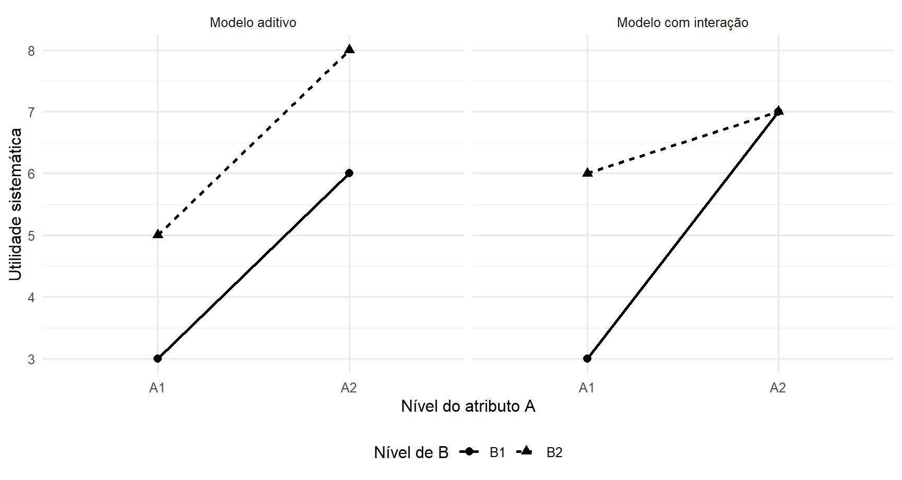
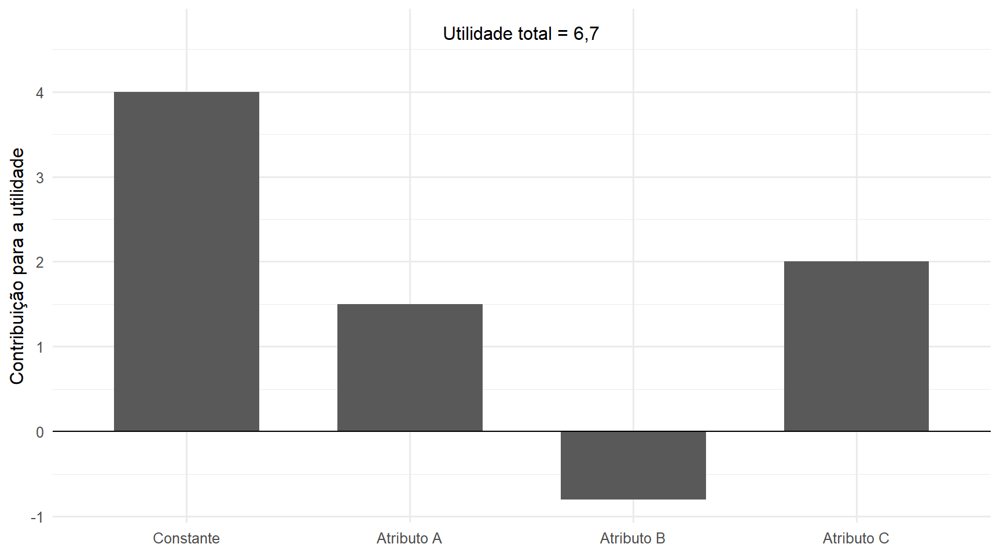

22 Formulação da Análise Conjunta
A Análise Conjunta relaciona avaliações, preferências ou escolhas às características que descrevem alternativas. Cada alternativa é representada por uma combinação de atributos e níveis, e o objetivo é decompor a preferência global em contribuições associadas a essas características (Green; Rao, 1971; Green; Srinivasan, 1978).
Na formulação aditiva clássica, essa decomposição é representada por uma função de utilidade cuja parte sistemática reúne contribuições dos atributos e de seus níveis (Green; Rao, 1971; Luce; Tukey, 1964). A representação dos perfis por uma matriz de delineamento conecta o problema aos fundamentos de codificação, posto, identificação, estimabilidade e modelo linear desenvolvidos nos Módulos 1 e 2.
A forma da resposta observada pode variar entre avaliações quantitativas, respostas ordinais, ordenações, comparações e escolhas. O mecanismo estatístico que relaciona a utilidade à observação deve ser compatível com essa forma de resposta.
O capítulo desenvolve a representação dos perfis, o modelo aditivo de utilidade, as parametrizações dos níveis, a identificação, o delineamento e a estimação conceitual das preferências. Procedimentos de construção de delineamentos ótimos, algoritmos específicos, modelos de escolha em detalhe, validação e aplicações serão tratados posteriormente.
A estrutura da técnica é resumida na Tabela 22.1.
| Elemento | Representação | Papel |
|---|---|---|
| atributo | \(A_j\) | dimensão utilizada para descrever a alternativa |
| níveis do atributo | \(\mathcal L_j\) | valores ou categorias admitidos pelo atributo |
| alternativa ou perfil | \(\mathbf x_i\) | combinação específica dos níveis dos atributos |
| utilidade parcial | \(u_j(x_{ij})\) | contribuição associada ao nível do atributo \(j\) |
| utilidade sistemática | \(V_i\) | combinação das contribuições previstas pelo modelo |
| resposta | depende da forma de coleta | informação observada sobre preferência |
| delineamento | \(\mathbf Z\) | representação matricial dos níveis presentes nos perfis |
| parâmetros | \(\boldsymbol{\beta}\) | coeficientes associados à parametrização escolhida |
| resultado estrutural | utilidades e contrastes | decomposição das preferências segundo atributos e níveis |
A diferença em relação às técnicas anteriores é, portanto, estrutural. ACP, Correspondência e Correlação Canônica utilizam decomposições matriciais para encontrar direções. MANOVA e Análise Discriminante utilizam matrizes de dispersão e problemas de autovalores generalizados. Na Análise Conjunta, a estrutura principal é um modelo de preferência construído a partir da representação dos perfis em uma matriz de delineamento.
22.1 O problema da decomposição de preferências
Considere os atributos
\[ A_1,\ldots,A_m. \]
Cada atributo \(A_j\) possui um conjunto de níveis
\[ \mathcal L_j = \left\{ \ell_{j1}, \ldots, \ell_{jL_j} \right\}. \]
Definição 22.1 (Atributos e níveis) Considere
\[ m\geq1. \]
Para cada
\[ j=1,\ldots,m, \]
um atributo
\[ A_j \]
é uma característica utilizada para diferenciar as alternativas.
O conjunto
\[ \mathcal L_j = \left\{ \ell_{j1}, \ldots, \ell_{jL_j} \right\}, \qquad L_j\geq2, \]
é o conjunto de níveis do atributo \(A_j\).
Cada nível
\[ \ell_{j\ell}\in\mathcal L_j \]
representa um dos valores ou categorias admitidos para esse atributo na construção das alternativas.
Atributo e nível desempenham papéis diferentes.
O atributo define qual característica varia entre as alternativas. Os níveis definem quais valores dessa característica são considerados no estudo.
A Tabela 22.2 apresenta um exemplo abstrato de atributos e níveis utilizados na formação de perfis.
| Atributo | Níveis possíveis |
|---|---|
| \(A_1\): tipo | nível 1, nível 2 |
| \(A_2\): tamanho | pequeno, médio, grande |
| \(A_3\): preço | baixo, intermediário, alto |
Uma alternativa corresponde a uma escolha simultânea de um nível de cada atributo.
Definição 22.2 (Perfil) Considere
\[ m\geq1 \]
atributos com conjuntos de níveis
\[ \mathcal L_1,\ldots,\mathcal L_m. \]
Um perfil é um elemento
\[ \mathbf x_i = (x_{i1},\ldots,x_{im})^\top \in \mathcal L_1 \times \cdots \times \mathcal L_m, \tag{22.1}\]
em que
\[ x_{ij}\in\mathcal L_j \]
especifica o nível do atributo \(j\) presente no perfil \(i\).
Por exemplo,
\[ \mathbf x_i = ( \text{nível 2}, \text{médio}, \text{baixo} )^\top \]
representa uma alternativa específica formada pela combinação de três níveis.
Se todos os perfis possíveis forem considerados, o número total de combinações é
\[ N_{\mathrm{perf}} = \prod_{j=1}^{m} L_j. \tag{22.2}\]
O crescimento é multiplicativo. Por isso, mesmo um número moderado de atributos pode produzir um conjunto de alternativas muito grande.
Essa característica terá uma consequência importante posteriormente: a construção dos perfis determina a informação disponível para separar os efeitos dos atributos.
Antes disso, é necessário distinguir dois objetos:
- o perfil apresentado, determinado pelos níveis dos atributos;
- a resposta ao perfil, que contém informação sobre a preferência.
O perfil constitui a estrutura explicativa da alternativa. A resposta é a informação observada utilizada para relacionar essa estrutura à preferência.
22.2 Preferência e utilidade
Preferência e utilidade não são sinônimos.
A preferência estabelece uma relação entre alternativas. A utilidade fornece uma representação numérica dessa relação.
Considere dois perfis,
\[ \mathbf x_i \qquad\text{e}\qquad \mathbf x_h. \]
Se
\[ \mathbf x_i \]
é preferido a
\[ \mathbf x_h, \]
uma representação de utilidade orientada no sentido de maior preferência satisfaz
\[ U(\mathbf x_i) > U(\mathbf x_h). \]
Definição 22.3 (Utilidade) Considere
\[ m\geq1 \]
atributos com conjuntos de níveis
\[ \mathcal L_1,\ldots,\mathcal L_m \]
e o conjunto de perfis
\[ \mathcal X = \mathcal L_1 \times \cdots \times \mathcal L_m. \]
Denote por
\[ \succeq \]
uma relação de preferência sobre
\[ \mathcal X \]
que admita representação numérica.
Uma função de utilidade que representa essa preferência é uma função
\[ U: \mathcal X \longrightarrow \mathbb R \]
tal que, para quaisquer
\[ \mathbf x_i, \mathbf x_h \in \mathcal X, \]
\[ \mathbf x_i \succeq \mathbf x_h \quad\Longleftrightarrow\quad U(\mathbf x_i) \geq U(\mathbf x_h). \]
Segundo a orientação adotada neste capítulo, valores maiores de
\[ U(\mathbf x) \]
representam maior preferência pelo perfil \(\mathbf x\).
Essa formulação distingue explicitamente a relação de preferência da função numérica utilizada para representá-la.
A utilidade permite substituir comparações entre alternativas por comparações entre valores numéricos.
Entretanto, seu valor deve ser interpretado relativamente à representação utilizada.
Uma afirmação como
\[ U(\mathbf x_i)=8 \]
não possui, isoladamente, significado absoluto.
São especialmente relevantes comparações como
\[ U(\mathbf x_i) - U(\mathbf x_h). \]
A forma exata da indeterminação de localização ou escala depende do tipo de resposta e do modelo utilizado.
Em avaliações quantitativas, a escala observada fornece uma referência distinta daquela existente em respostas puramente ordinais.
Em modelos probabilísticos de escolha, diferenças de utilidade e a escala do componente aleatório desempenham outro papel.
Essas situações serão separadas posteriormente.
22.3 Utilidades parciais
A Análise Conjunta procura representar a utilidade de um perfil por componentes associados aos atributos.
Para cada atributo \(j\), considere uma função definida sobre seus níveis.
Definição 22.4 (Utilidade parcial) Considere um atributo
\[ A_j \]
com conjunto de níveis
\[ \mathcal L_j. \]
Uma função de utilidade parcial para esse atributo é uma função
\[ u_j: \mathcal L_j \longrightarrow \mathbb R. \]
Para um nível
\[ x_{ij}\in\mathcal L_j, \]
a quantidade
\[ u_j(x_{ij}) \]
representa a contribuição associada a esse nível na estrutura de utilidade considerada.
Essa definição torna explícito que a utilidade parcial não é inicialmente um coeficiente de regressão.
Ela é uma função sobre os níveis do atributo.
Os coeficientes aparecerão posteriormente quando essas funções forem representadas por uma determinada codificação matricial.
A comparação entre níveis de um mesmo atributo é especialmente importante.
Para
\[ a,b\in\mathcal L_j, \]
a diferença
\[ u_j(a)-u_j(b) \tag{22.3}\]
representa a diferença de contribuição associada à substituição do nível \(b\) pelo nível \(a\), segundo a estrutura de utilidade adotada.
A utilidade parcial também é relativa ao problema estudado. Sua interpretação depende:
- dos níveis incluídos no atributo;
- dos demais atributos considerados;
- da forma adotada para representar a utilidade;
- posteriormente, da parametrização utilizada.
Essa dependência ficará especialmente clara quando diferentes codificações produzirem coeficientes distintos para as mesmas utilidades ou contrastes ajustados.
22.4 Modelo aditivo de utilidade
A formulação clássica supõe que a parte sistemática da utilidade de um perfil possa ser representada pela soma das contribuições dos atributos.
Definição 22.5 (Modelo aditivo de utilidade) Considere
\[ m\geq1 \]
atributos com conjuntos de níveis
\[ \mathcal L_1,\ldots,\mathcal L_m, \]
um perfil
\[ \mathbf x_i = (x_{i1},\ldots,x_{im})^\top \in \mathcal L_1 \times \cdots \times \mathcal L_m, \]
funções de utilidade parcial
\[ u_j: \mathcal L_j \longrightarrow \mathbb R, \qquad j=1,\ldots,m, \]
e uma constante
\[ \beta_0\in\mathbb R. \]
O modelo aditivo de utilidade sistemática é
\[ V_i = V(\mathbf x_i) = \beta_0 + \sum_{j=1}^{m} u_j(x_{ij}). \tag{22.4}\]
A quantidade
\[ V_i \]
representa a parcela sistemática da utilidade que o modelo associa às características do perfil.
A constante
\[ \beta_0 \]
estabelece um nível de referência comum à representação, enquanto
\[ u_j(x_{ij}) \]
representa a contribuição atribuída ao nível observado no atributo \(j\).
A forma aditiva não é uma consequência puramente algébrica. Ela é uma hipótese estrutural sobre a representação da preferência.
Sua base está na ideia de separabilidade: a contribuição de cada atributo pode ser representada por uma função própria e essas contribuições podem ser somadas (Luce; Tukey, 1964).
22.4.1 Resposta quantitativa e utilidade sistemática
A utilidade sistemática não deve ser confundida com a resposta observada.
Considere inicialmente uma situação em que o participante fornece uma resposta quantitativa para cada perfil.
Para o perfil \(i\), represente a resposta aleatória por
\[ \mathsf Y_i. \]
Uma formulação estatística inicial é
\[ \mathsf Y_i = V_i + \varepsilon_i, \]
ou, utilizando Equação 22.4,
\[ \mathsf Y_i = \beta_0 + \sum_{j=1}^{m} u_j(x_{ij}) + \varepsilon_i. \tag{22.5}\]
Nessa expressão,
\[ \varepsilon_i \]
representa a parcela aleatória da resposta que não é representada pela estrutura sistemática incluída no modelo.
Após observar a resposta, sua realização será denotada por
\[ y_i. \]
Essa distinção antecipa a separação já utilizada no Módulo 2 entre:
- variável aleatória;
- parâmetro;
- estimador;
- realização observada.
A equação Equação 22.5 ainda não exige uma distribuição normal para
\[ \varepsilon_i. \]
Aditividade da utilidade e normalidade dos erros são hipóteses de naturezas diferentes.
A primeira define a forma da parte sistemática do modelo. A segunda, quando adotada, pertence a uma especificação probabilística particular e pode ser necessária para determinados resultados inferenciais.
Neste capítulo, a normalidade não será tratada como pressuposto geral da Análise Conjunta.
A conexão com o modelo linear surgirá quando as funções
\[ u_j(\cdot) \]
forem representadas numericamente por meio de uma codificação dos níveis.
22.5 Aditividade
A hipótese de aditividade significa que a contribuição sistemática total é obtida pela soma das contribuições dos atributos.
Considere, para simplificar, dois atributos
\[ A \qquad\text{e}\qquad B. \]
Para níveis
\[ a\in\mathcal L_A \qquad\text{e}\qquad b\in\mathcal L_B, \]
o modelo aditivo possui a forma
\[ V(a,b) = \beta_0 + u_A(a) + u_B(b). \tag{22.6}\]
Considere agora outro nível
\[ a'\in\mathcal L_A. \]
A diferença provocada pela substituição de \(a\) por \(a'\) é
\[ \begin{aligned} V(a',b)-V(a,b) &= u_A(a') - u_A(a). \end{aligned} \tag{22.7}\]
O lado direito não depende de
\[ b. \]
Portanto, dentro da estrutura aditiva, a diferença associada à mudança de nível em um atributo não se modifica segundo o nível assumido pelo outro atributo.
Essa propriedade caracteriza a ausência de interação na formulação básica.
22.6 Compensação entre atributos
A estrutura aditiva também permite que diferenças de contribuição em atributos distintos se compensem.
Considere dois perfis,
\[ \mathbf x_i \qquad\text{e}\qquad \mathbf x_h. \]
Pelo modelo aditivo,
\[ \begin{aligned} V_i-V_h &= \left[ \beta_0 + \sum_{j=1}^{m} u_j(x_{ij}) \right] - \left[ \beta_0 + \sum_{j=1}^{m} u_j(x_{hj}) \right] \\ &= \sum_{j=1}^{m} \left[ u_j(x_{ij}) - u_j(x_{hj}) \right]. \end{aligned} \tag{22.8}\]
Uma alternativa pode apresentar contribuição menor em um atributo e contribuição maior em outro.
A comparação global depende da soma das diferenças.
Essa propriedade é denominada compensação: uma redução relativa de utilidade associada a determinada característica pode ser compensada por ganhos associados a outras.
A compensação é uma consequência da estrutura aditiva.
Ela não deve ser assumida automaticamente quando o problema substantivo contém:
- requisitos obrigatórios;
- limiares;
- restrições;
- características não compensatórias.
Nesses casos, a forma aditiva pode não representar adequadamente a estrutura de preferência.
22.7 Interações entre atributos
A hipótese aditiva também pode ser insuficiente quando a contribuição associada a um atributo depende do nível assumido por outro.
Para dois atributos, uma extensão é
\[ V(a,b) = \beta_0 + u_A(a) + u_B(b) + u_{AB}(a,b), \tag{22.9}\]
em que
\[ u_{AB}: \mathcal L_A \times \mathcal L_B \longrightarrow \mathbb R \]
representa uma contribuição específica da combinação dos níveis
\[ (a,b). \]
Nesse caso,
\[ \begin{aligned} V(a',b)-V(a,b) &= u_A(a') - u_A(a) \\ &\quad+ u_{AB}(a',b) - u_{AB}(a,b). \end{aligned} \]
A diferença pode agora depender de
\[ b. \]
Assim, com interação, a contribuição associada a uma mudança de nível em um atributo não pode ser descrita inteiramente sem considerar os níveis dos atributos com os quais ele interage.
A Figura 22.1 ilustra essa diferença. No modelo aditivo, a diferença entre os níveis do primeiro atributo permanece constante para os diferentes níveis do segundo. Com interação, essa diferença se modifica.
No painel aditivo, a mudança de \(A_1\) para \(A_2\) produz a mesma diferença de utilidade para \(B_1\) e \(B_2\).
No painel com interação, o efeito de alterar o nível de \(A\) depende do nível de \(B\).
A inclusão de interações aumenta a complexidade da representação. Mais contribuições precisam ser associadas às combinações de níveis e, posteriormente, mais parâmetros precisam ser representados na matriz de delineamento.
Consequentemente, o conjunto de perfis precisa fornecer informação suficiente para distinguir os efeitos que o modelo pretende representar.
Essa observação prepara a próxima etapa da formulação: transformar atributos e níveis em uma representação matricial.
As funções
\[ u_j: \mathcal L_j \longrightarrow \mathbb R \]
ainda descrevem contribuições conceituais dos níveis. Para estimá-las a partir dos dados, será necessário escolher uma codificação e construir uma matriz
\[ \mathbf Z \]
cujas colunas representem os parâmetros ou contrastes correspondentes.
É nessa passagem que os fundamentos de transformações, dependência linear, espaço coluna, núcleo, posto e identificação dos Módulos 1 e 2 passam a determinar diretamente quais utilidades e contrastes podem ser estimados.
22.8 Da utilidade à representação matricial
O modelo em Equação 22.5 ainda está escrito em termos das funções
\[ u_j(x_{ij}). \]
Para estimar essas contribuições a partir das respostas observadas, os níveis dos atributos precisam ser representados numericamente.
Essa passagem não altera o problema substantivo. O perfil continua sendo uma combinação de níveis,
\[ \mathbf x_i = (x_{i1},\ldots,x_{im})^\top, \]
mas cada nível passa a ser associado a um vetor numérico utilizado na construção do modelo.
A representação será organizada na matriz de delineamento
\[ \mathbf Z. \]
Cada linha de
\[ \mathbf Z \]
representará um perfil segundo uma codificação previamente escolhida, enquanto suas colunas representarão os termos que o modelo pretende distinguir.
Depois dessa codificação, a utilidade sistemática poderá ser escrita como
\[ V_i = \mathbf z_i^\top \boldsymbol{\beta}, \]
conectando a Análise Conjunta diretamente aos fundamentos de:
- matriz de delineamento;
- espaço coluna;
- espaço linha;
- núcleo;
- posto;
- parametrização;
- identificação;
- funções estimáveis;
desenvolvidos nos Módulos 1 e 2.
A particularidade da técnica está na origem substantiva desses objetos: as colunas de
\[ \mathbf Z \]
são construídas a partir dos atributos, níveis e efeitos que se deseja representar.
22.9 Codificação dos níveis
Considere o atributo
\[ A_j \]
com conjunto de níveis
\[ \mathcal L_j. \]
Uma codificação associa a cada nível desse atributo um vetor numérico.
Definição 22.6 (Codificação de um atributo) Considere um atributo
\[ A_j \]
com conjunto de níveis
\[ \mathcal L_j = \left\{ \ell_{j1}, \ldots, \ell_{jL_j} \right\}. \]
Uma codificação do atributo \(A_j\) é uma função
\[ c_j: \mathcal L_j \longrightarrow \mathbb R^{d_j}, \tag{22.10}\]
em que
\[ d_j\geq1 \]
é o número de coordenadas utilizadas para representar os níveis desse atributo na parametrização considerada.
Assim, se o perfil \(i\) apresenta o nível
\[ x_{ij}\in\mathcal L_j, \]
esse nível é representado por
\[ c_j(x_{ij}) \in \mathbb R^{d_j}. \]
A codificação transforma, portanto, a informação categórica do perfil em coordenadas numéricas que podem ocupar colunas de uma matriz de delineamento.
Em um modelo aditivo contendo apenas efeitos principais e intercepto, a linha correspondente ao perfil \(i\) pode ser escrita como
\[ \mathbf z_i^\top = \begin{pmatrix} 1 & c_1(x_{i1})^\top & \cdots & c_m(x_{im})^\top \end{pmatrix}. \tag{22.11}\]
Se
\[ d_j \]
coordenadas são utilizadas para o atributo \(j\), então
\[ \mathbf z_i \in \mathbb R^d, \]
com
\[ d = 1 + \sum_{j=1}^{m} d_j. \tag{22.12}\]
O primeiro termo corresponde ao intercepto.
Os demais são determinados pelas codificações escolhidas.
A codificação não é um detalhe computacional. Ela determina o significado dos coeficientes contidos em
\[ \boldsymbol{\beta}. \]
Diferentes codificações podem representar o mesmo conjunto de utilidades sistemáticas utilizando parâmetros numericamente diferentes.
Essa distinção será central para compreender identificação.
22.10 Representação matricial do modelo
Considere
\[ N\geq1 \]
avaliações quantitativas correspondentes a perfis
\[ \mathbf x_1,\ldots,\mathbf x_N. \]
Para cada perfil, seja
\[ \mathbf z_i^\top \in \mathbb R^{1\times d} \]
a linha construída a partir de sua codificação.
Reunindo as \(N\) linhas,
\[ \mathbf Z = \begin{pmatrix} \mathbf z_1^\top\\ \vdots\\ \mathbf z_N^\top \end{pmatrix} \in \mathbb R^{N\times d}. \tag{22.13}\]
As dimensões possuem interpretações distintas:
- \(N\) é o número de avaliações representadas;
- \(d\) é o número de coeficientes da parametrização utilizada.
O vetor
\[ \boldsymbol{\beta} \in \mathbb R^d \]
reúne o intercepto e os coeficientes associados à codificação dos efeitos incluídos no modelo.
A utilidade sistemática do perfil \(i\) é
\[ V_i = \mathbf z_i^\top \boldsymbol{\beta}. \]
Reunindo todos os perfis,
\[ \mathbf V = \mathbf Z \boldsymbol{\beta}, \tag{22.14}\]
em que
\[ \mathbf V = \begin{pmatrix} V_1\\ \vdots\\ V_N \end{pmatrix} \in \mathbb R^N. \]
Para respostas quantitativas, defina o vetor aleatório
\[ \boldsymbol{\mathsf Y} = \begin{pmatrix} \mathsf Y_1\\ \vdots\\ \mathsf Y_N \end{pmatrix} \in \mathbb R^N \]
e o vetor aleatório de erros
\[ \boldsymbol{\varepsilon} = \begin{pmatrix} \varepsilon_1\\ \vdots\\ \varepsilon_N \end{pmatrix} \in \mathbb R^N. \]
O modelo torna-se
\[ \boldsymbol{\mathsf Y} = \mathbf Z \boldsymbol{\beta} + \boldsymbol{\varepsilon}. \tag{22.15}\]
Após a observação das respostas, obtém-se a realização
\[ \mathbf y = \begin{pmatrix} y_1\\ \vdots\\ y_N \end{pmatrix} \in \mathbb R^N. \]
A equação Equação 22.15 é a especialização, para uma única resposta, do modelo linear definido em Definição 11.3.
A Análise Conjunta não exige uma nova teoria de mínimos quadrados.
Sua especificidade está em responder:
- como os perfis dão origem às linhas de \(\mathbf Z\);
- como atributos e níveis dão origem às colunas de \(\mathbf Z\);
- quais parâmetros podem ser identificados;
- como os coeficientes são interpretados como contrastes ou contribuições de utilidade.
É importante não identificar automaticamente cada componente de
\[ \boldsymbol{\beta} \]
com uma utilidade parcial absoluta.
O significado de cada coeficiente depende da codificação utilizada.
22.11 Categoria de referência
Considere um atributo
\[ A_j \]
com
\[ L_j \]
níveis.
Uma forma de produzir uma parametrização identificada consiste em escolher um dos níveis como categoria de referência.
Nesse caso, são utilizadas
\[ L_j-1 \]
colunas.
Suponha, por exemplo, que o atributo \(A\) possua três níveis,
\[ A_1, \qquad A_2, \qquad A_3, \]
e que
\[ A_1 \]
seja escolhido como referência.
Defina
\[ z_{A2} = \begin{cases} 1, & A=A_2, \\[4pt] 0, & \text{caso contrário}, \end{cases} \]
e
\[ z_{A3} = \begin{cases} 1, & A=A_3, \\[4pt] 0, & \text{caso contrário}. \end{cases} \]
A codificação é, portanto,
\[ c_A(A_1) = \begin{pmatrix} 0\\ 0 \end{pmatrix}, \]
\[ c_A(A_2) = \begin{pmatrix} 1\\ 0 \end{pmatrix} \]
e
\[ c_A(A_3) = \begin{pmatrix} 0\\ 1 \end{pmatrix}. \]
A contribuição parametrizada desse atributo é
\[ \beta_{A2}z_{A2} + \beta_{A3}z_{A3}. \]
O nível
\[ A_1 \]
não possui coeficiente próprio nessa representação.
Sua contribuição é incorporada à origem definida pelo intercepto e pelas categorias de referência escolhidas para os atributos.
A mudança para uma codificação por referência também reparametriza o intercepto. Se
\[ \ell_{j0} \]
é o nível de referência do atributo \(j\), então, partindo de uma representação aditiva arbitrária,
\[ V_i = \beta_0 + \sum_{j=1}^{m} u_j(x_{ij}), \]
o intercepto da parametrização por referência incorpora as contribuições dos níveis omitidos:
\[ \beta_0^{(\mathrm{ref})} = \beta_0 + \sum_{j=1}^{m} u_j(\ell_{j0}). \]
Os coeficientes associados aos níveis não omitidos passam a representar diferenças em relação às respectivas referências. Para simplificar a notação, o intercepto reparametrizado continuará sendo denotado por
\[ \beta_0 \]
nas expressões seguintes.
Nessa parametrização,
\[ \beta_{A2} = u_A(A_2) - u_A(A_1) \tag{22.16}\]
e
\[ \beta_{A3} = u_A(A_3) - u_A(A_1). \tag{22.17}\]
Os coeficientes são, portanto, contrastes em relação ao nível de referência.
Considere agora dois atributos:
- \(A\), com níveis \(A_1,A_2,A_3\);
- \(B\), com níveis \(B_1,B_2\).
Utilizando
\[ A_1 \qquad\text{e}\qquad B_1 \]
como referências, a matriz de delineamento de todos os seis perfis pode ser representada pela Tabela 22.3.
| Perfil | \(A\) | \(B\) | intercepto | \(z_{A2}\) | \(z_{A3}\) | \(z_{B2}\) |
|---|---|---|---|---|---|---|
| 1 | \(A_1\) | \(B_1\) | 1 | 0 | 0 | 0 |
| 2 | \(A_1\) | \(B_2\) | 1 | 0 | 0 | 1 |
| 3 | \(A_2\) | \(B_1\) | 1 | 1 | 0 | 0 |
| 4 | \(A_2\) | \(B_2\) | 1 | 1 | 0 | 1 |
| 5 | \(A_3\) | \(B_1\) | 1 | 0 | 1 | 0 |
| 6 | \(A_3\) | \(B_2\) | 1 | 0 | 1 | 1 |
O modelo correspondente é
\[ V_i = \beta_0 + \beta_{A2}z_{i,A2} + \beta_{A3}z_{i,A3} + \beta_{B2}z_{i,B2}. \tag{22.18}\]
Para o perfil
\[ (A_1,B_1), \]
todas as colunas indicadoras são iguais a zero e
\[ V(A_1,B_1) = \beta_0. \]
Para
\[ (A_2,B_1), \]
tem-se
\[ V(A_2,B_1) = \beta_0 + \beta_{A2}. \]
Portanto,
\[ V(A_2,B_1) - V(A_1,B_1) = \beta_{A2}. \]
A interpretação do coeficiente está diretamente vinculada à categoria escolhida como referência.
Se outra categoria fosse utilizada, os coeficientes mudariam, embora as diferenças ajustadas entre os mesmos perfis pudessem permanecer iguais.
22.12 Codificação por efeitos
Outra possibilidade consiste em representar os níveis de cada atributo por contrastes associados a uma restrição de soma zero.
A Tabela 22.4 apresenta uma possível codificação por efeitos para um atributo com três níveis.
| Nível | \(z_1\) | \(z_2\) |
|---|---|---|
| \(A_1\) | 1 | 0 |
| \(A_2\) | 0 | 1 |
| \(A_3\) | -1 | -1 |
Nesse caso,
\[ c_A(A_1) = \begin{pmatrix} 1\\ 0 \end{pmatrix}, \qquad c_A(A_2) = \begin{pmatrix} 0\\ 1 \end{pmatrix}, \qquad c_A(A_3) = \begin{pmatrix} -1\\ -1 \end{pmatrix}. \]
A contribuição parametrizada do atributo é
\[ \beta_{A1}z_1 + \beta_{A2}z_2. \]
As utilidades parciais são representadas por
\[ u_A(A_1) = \beta_{A1}, \]
\[ u_A(A_2) = \beta_{A2} \]
e
\[ u_A(A_3) = - \beta_{A1} - \beta_{A2}. \tag{22.19}\]
Consequentemente,
\[ u_A(A_1) + u_A(A_2) + u_A(A_3) = 0. \tag{22.20}\]
A restrição de soma zero estabelece uma origem para a representação das utilidades parciais do atributo.
O nível representado por
\[ (-1,-1) \]
não possui utilidade zero.
Sua utilidade é recuperada a partir dos demais parâmetros por Equação 22.19.
Assim:
- na codificação por referência, os coeficientes são diferenças em relação a um nível escolhido;
- na codificação por efeitos, as contribuições são expressas relativamente a uma restrição de soma zero.
As duas parametrizações podem representar o mesmo conjunto de utilidades sistemáticas, embora seus coeficientes tenham significados e valores numéricos diferentes.
22.13 Por que a identificação é necessária
A necessidade de uma codificação identificada pode ser vista diretamente pela estrutura da matriz de delineamento.
Suponha que um atributo possua
\[ L_j \]
níveis e que sejam incluídas simultaneamente:
- uma coluna de intercepto;
- uma coluna indicadora para cada um dos \(L_j\) níveis.
Para cada perfil, exatamente uma das indicadoras do atributo é igual a \(1\).
Logo,
\[ \mathbf1_N = \mathbf z_{j1} + \cdots + \mathbf z_{jL_j}, \tag{22.21}\]
em que
\[ \mathbf z_{j\ell} \in \mathbb R^N \]
é a coluna indicadora correspondente ao nível \(\ell\) do atributo \(j\).
A coluna do intercepto é, portanto, combinação linear das colunas indicadoras.
Consequentemente,
\[ \operatorname{posto} (\mathbf Z) < d. \]
Existe então um vetor
\[ \mathbf d \neq \mathbf0 \]
tal que
\[ \mathbf Z\mathbf d = \mathbf0. \]
Ou seja,
\[ \mathbf d \in \mathcal N(\mathbf Z). \]
Para qualquer vetor de parâmetros
\[ \boldsymbol{\beta}, \]
tem-se
\[ \begin{aligned} \mathbf Z ( \boldsymbol{\beta} + \mathbf d ) &= \mathbf Z \boldsymbol{\beta} + \mathbf Z\mathbf d \\ &= \mathbf Z \boldsymbol{\beta}. \end{aligned} \tag{22.22}\]
Portanto,
\[ \boldsymbol{\beta} \]
e
\[ \boldsymbol{\beta} + \mathbf d \]
produzem exatamente o mesmo vetor de utilidades sistemáticas.
O problema não é a inexistência de uma representação dos perfis.
O problema é que mais de um vetor de coeficientes representa a mesma estrutura sistemática.
22.14 Identificação do modelo
A identificação pode ser formulada diretamente como uma propriedade da aplicação linear determinada pela matriz de delineamento.
Definição 22.7 (Identificação na Análise Conjunta) Considere
\[ \mathbf Z \in \mathbb R^{N\times d} \]
e um espaço paramétrico
\[ \Theta \subseteq \mathbb R^d. \]
A parametrização é identificada em \(\Theta\) quando a aplicação
\[ \boldsymbol{\beta} \longmapsto \mathbf Z\boldsymbol{\beta} \]
é injetiva em \(\Theta\).
Equivalentemente, para quaisquer
\[ \boldsymbol{\beta}_1, \boldsymbol{\beta}_2 \in \Theta, \]
a igualdade
\[ \mathbf Z\boldsymbol{\beta}_1 = \mathbf Z\boldsymbol{\beta}_2 \]
implica
\[ \boldsymbol{\beta}_1 = \boldsymbol{\beta}_2. \]
Quando
\[ \Theta = \mathbb R^d, \]
a parametrização é identificada se, e somente se,
\[ \mathcal N(\mathbf Z) = \{\mathbf0\}. \]
Como
\[ \mathbf Z \in \mathbb R^{N\times d}, \]
o Teorema Posto–Nulidade de Teorema 3.5 mostra que essa condição equivale a
\[ \operatorname{posto} (\mathbf Z) = d. \]
Essa definição distingue dois casos.
22.14.1 Parametrização irrestrita
Se
\[ \Theta = \mathbb R^d, \]
a identificação exige posto coluna completo.
22.14.2 Parametrização restrita
Se são impostas restrições, como
\[ \sum_{\ell=1}^{L_j} u_j(\ell) = 0, \]
o espaço paramétrico deixa de ser todo
\[ \mathbb R^d. \]
Nesse caso, não é necessário que uma representação redundante seja injetiva sobre todo o espaço original; é necessário que ela seja injetiva sobre o espaço que satisfaz as restrições de identificação.
Essa distinção é importante porque categoria de referência e soma zero resolvem a mesma indeterminação por caminhos diferentes.
A relação Equação 22.22 é a versão vetorial, para uma resposta, da equivalência de matrizes de parâmetros definida em Definição 11.15 e Equação 11.113 no modelo linear multivariado.
A pseudoinversa de Moore–Penrose, definida em Definição 6.11, permite selecionar uma solução de mínimos quadrados mesmo quando
\[ \mathbf Z \]
possui posto deficiente.
Entretanto, Proposição 11.11 estabelece que, nesse caso, os coeficientes podem permanecer não únicos mesmo quando os valores ajustados são únicos. Portanto, a pseudoinversa não transforma uma parametrização não identificada em identificada.
A identificação decorre da estrutura do espaço paramétrico e do delineamento, e não do algoritmo utilizado para calcular uma solução.
22.15 Restrições de identificação
Duas estratégias básicas permitem remover a redundância provocada pela inclusão simultânea do intercepto e de todas as indicadoras.
22.15.1 Eliminação de uma categoria
Na codificação por referência, uma categoria de cada atributo é omitida.
Para um modelo aditivo contendo apenas intercepto e efeitos principais, são utilizados
\[ L_j-1 \]
coeficientes para o atributo \(j\).
Assim,
\[ d = 1 + \sum_{j=1}^{m} (L_j-1). \tag{22.23}\]
O primeiro termo corresponde ao intercepto.
Cada atributo acrescenta exatamente o número de graus de liberdade necessário para representar diferenças entre seus níveis.
22.15.2 Restrição de soma zero
Outra possibilidade é representar as utilidades dos níveis impondo
\[ \sum_{\ell=1}^{L_j} u_j(\ell) = 0. \tag{22.24}\]
Essa restrição remove uma dimensão de indeterminação.
Embora existam
\[ L_j \]
valores de utilidade parcial associados aos níveis, apenas
\[ L_j-1 \]
podem variar livremente.
Portanto, nas duas estratégias, o atributo possui
\[ L_j-1 \]
graus de liberdade.
A parametrização determina como esses graus de liberdade são expressos, não quantos existem.
Esse ponto impede uma interpretação equivocada: eliminar uma categoria não significa afirmar que a contribuição substantiva desse nível seja nula.
Da mesma forma, impor soma zero não significa que as utilidades tenham uma origem natural em zero.
Ambas são convenções utilizadas para identificar a representação.
22.16 Equivalência entre parametrizações
Diferentes codificações podem produzir matrizes de delineamento distintas sem alterar o espaço de utilidades sistemáticas que o modelo consegue representar.
Considere
\[ \mathbf Z_1 \in \mathbb R^{N\times d_1} \]
e
\[ \mathbf Z_2 \in \mathbb R^{N\times d_2}, \]
correspondentes a duas parametrizações dos mesmos efeitos.
Se
\[ \mathcal C (\mathbf Z_1) = \mathcal C (\mathbf Z_2), \tag{22.25}\]
então as duas matrizes representam o mesmo conjunto de vetores possíveis de utilidade sistemática.
Para qualquer
\[ \mathbf V \]
pertencente a esse espaço, podem existir vetores
\[ \boldsymbol{\beta}_1 \qquad\text{e}\qquad \boldsymbol{\beta}_2 \]
tais que
\[ \mathbf V = \mathbf Z_1 \boldsymbol{\beta}_1 = \mathbf Z_2 \boldsymbol{\beta}_2. \tag{22.26}\]
Os vetores
\[ \boldsymbol{\beta}_1 \]
e
\[ \boldsymbol{\beta}_2 \]
não precisam:
- possuir a mesma dimensão;
- possuir os mesmos valores;
- atribuir o mesmo significado aos seus componentes.
O que permanece igual é a estrutura sistemática representada no espaço dos perfis.
Esse resultado aplica à Análise Conjunta a ideia geral de que o modelo depende do espaço coluna de
\[ \mathbf Z, \]
e não de uma base particular utilizada para representá-lo.
Consequentemente,
coeficientes de uma codificação não são, por si só, objetos invariantes da preferência.
O significado substantivo deve ser procurado em quantidades preservadas entre parametrizações equivalentes, como:
- utilidades sistemáticas dos perfis;
- diferenças entre perfis;
- contrastes entre níveis que sejam estimáveis.
22.17 Diferenças de utilidade e funções estimáveis
Considere dois perfis com vetores de delineamento
\[ \mathbf z_i \qquad\text{e}\qquad \mathbf z_h. \]
Suas utilidades sistemáticas são
\[ V_i = \mathbf z_i^\top \boldsymbol{\beta} \]
e
\[ V_h = \mathbf z_h^\top \boldsymbol{\beta}. \]
A diferença é
\[ \begin{aligned} V_i-V_h &= \mathbf z_i^\top \boldsymbol{\beta} - \mathbf z_h^\top \boldsymbol{\beta} \\ &= ( \mathbf z_i-\mathbf z_h )^\top \boldsymbol{\beta}. \end{aligned} \tag{22.27}\]
Essa diferença é uma função linear dos parâmetros.
Quando
\[ \mathbf Z \]
possui posto deficiente, nem toda função de
\[ \boldsymbol{\beta} \]
é identificada pela estrutura sistemática
\[ \mathbf Z\boldsymbol{\beta}. \]
Algebricamente, uma função linear
\[ \mathbf c^\top \boldsymbol{\beta} \]
é invariável entre todos os vetores de parâmetros equivalentes quando
\[ \mathbf c \in \mathcal C \left( \mathbf Z^\top \right). \]
Para relacionar essa propriedade à estimabilidade estatística definida no Módulo 2, considere uma resposta quantitativa satisfazendo
\[ E \left( \boldsymbol{\varepsilon} \mid \mathbf Z \right) = \mathbf0, \]
de modo que
\[ E \left( \boldsymbol{\mathsf Y} \mid \mathbf Z \right) = \mathbf Z \boldsymbol{\beta}. \]
Então, pela definição de Definição 11.16 e pela caracterização de Proposição 11.12, a função
\[ \mathbf c^\top \boldsymbol{\beta} \]
é linearmente estimável se, e somente se,
\[ \mathbf c \in \mathcal C \left( \mathbf Z^\top \right). \tag{22.28}\]
Assim, a mesma condição de espaço linha possui duas leituras relacionadas:
- algebricamente, determina quais funções permanecem iguais entre parametrizações equivalentes;
- estatisticamente, sob o modelo de médias, determina quais funções lineares admitem estimadores lineares não viesados.
A condição possui uma interpretação direta.
Se
\[ \mathbf c \]
pertence ao espaço linha de
\[ \mathbf Z, \]
existe
\[ \mathbf a\in\mathbb R^N \]
tal que
\[ \mathbf c^\top = \mathbf a^\top \mathbf Z. \]
Então,
\[ \mathbf c^\top \boldsymbol{\beta} = \mathbf a^\top \mathbf Z \boldsymbol{\beta}, \]
de modo que essa função depende apenas da estrutura sistemática
\[ \mathbf Z\boldsymbol{\beta}, \]
e não da escolha de um representante particular entre vetores de parâmetros equivalentes.
Esse é o motivo matemático pelo qual determinados contrastes podem ser interpretados mesmo sob parametrizações redundantes.
22.17.1 Diferenças entre perfis
Para Equação 22.27, o vetor do contraste é
\[ \mathbf c = \mathbf z_i-\mathbf z_h. \]
Quando
\[ \mathbf c \in \mathcal C ( \mathbf Z^\top ), \]
a diferença
\[ V_i-V_h \]
é uma função estimável.
Para perfis já representados pelas linhas da própria matriz de delineamento, diferenças entre seus valores sistemáticos pertencem naturalmente à estrutura representada pelo modelo.
22.17.2 Diferenças entre níveis
Considere dois níveis
\[ a,b\in\mathcal L_j. \]
A diferença
\[ u_j(a)-u_j(b) \]
é especialmente relevante porque não depende da escolha de uma origem comum para todas as utilidades daquele atributo.
Sua estimabilidade, entretanto, depende de o delineamento permitir distinguir o contraste correspondente.
Portanto, a existência conceitual de dois níveis não garante, por si só, que sua diferença possa ser estimada a partir dos perfis observados.
22.17.3 Novo perfil
Considere um novo perfil com vetor de codificação
\[ \mathbf z_0^\top. \]
Sua utilidade sistemática é
\[ V_0 = \mathbf z_0^\top \boldsymbol{\beta}. \]
Se
\[ \mathbf Z \]
possui posto deficiente, essa quantidade é estimável somente quando
\[ \mathbf z_0 \in \mathcal C ( \mathbf Z^\top ). \tag{22.29}\]
Assim, uma parametrização pode ajustar unicamente os perfis utilizados na construção do modelo sem permitir a determinação de toda combinação arbitrária de níveis.
Essa distinção será importante quando examinarmos o delineamento dos perfis.
22.18 Um exemplo de equivalência entre codificações
Considere novamente o atributo \(A\) com três níveis.
Suponha que, sob codificação por efeitos, as utilidades parciais sejam
\[ u_A(A_1) = 2, \]
\[ u_A(A_2) = -0,5 \]
e
\[ u_A(A_3) = -1,5. \]
A restrição de soma zero é satisfeita:
\[ 2-0,5-1,5 = 0. \]
As diferenças relativamente a
\[ A_1 \]
são
\[ u_A(A_2) - u_A(A_1) = -2,5 \]
e
\[ u_A(A_3) - u_A(A_1) = -3,5. \]
Se
\[ A_1 \]
for escolhido como categoria de referência, os coeficientes correspondentes serão
\[ \beta_{A2}^{(\mathrm{ref})} = -2,5 \]
e
\[ \beta_{A3}^{(\mathrm{ref})} = -3,5. \]
Os valores numéricos dos parâmetros mudaram porque seu significado mudou.
Entretanto, as diferenças entre os níveis são preservadas.
Por exemplo,
\[ u_A(A_2)-u_A(A_3) = 1 \]
em ambas as representações.
A ordenação também permanece:
\[ u_A(A_1) > u_A(A_2) > u_A(A_3). \]
O exemplo distingue dois objetos:
- parâmetro da codificação, cujo valor depende da base escolhida;
- contraste estimável de preferência, que pode permanecer invariável entre parametrizações equivalentes.
Essa distinção será retomada posteriormente na interpretação das utilidades estimadas.
22.19 Posto e complexidade do modelo
A identificação depende da eliminação das redundâncias introduzidas pela codificação e de o conjunto de perfis fornecer informação suficiente para separar os efeitos incluídos no modelo.
No modelo aditivo contendo apenas efeitos principais, uma parametrização identificada utiliza
\[ d = 1 + \sum_{j=1}^{m} (L_j-1) \]
parâmetros.
Para que todos esses coeficientes possam ser identificados por uma parametrização irrestrita, é necessário que
\[ \operatorname{posto} (\mathbf Z) = d. \tag{22.30}\]
Como
\[ \mathbf Z \in \mathbb R^{N\times d}, \]
tem-se necessariamente
\[ d \leq N. \]
Essa condição é necessária, mas não suficiente: mesmo com
\[ N\geq d, \]
uma seleção inadequada de perfis pode produzir colunas linearmente dependentes.
22.19.1 Inclusão de interações
Se forem incluídas interações entre dois atributos
\[ A_j \qquad\text{e}\qquad A_h, \]
com
\[ L_j \]
e
\[ L_h \]
níveis, respectivamente, a interação acrescenta
\[ (L_j-1)(L_h-1) \tag{22.31}\]
graus de liberdade em uma parametrização identificada.
A estrutura sistemática pode então assumir a forma
\[ V_i = \beta_0 + \sum_{j=1}^{m} u_j(x_{ij}) + \sum_{j<h} u_{jh} ( x_{ij}, x_{ih} ). \]
Incluir uma interação significa acrescentar ao modelo novas funções que precisam ser distinguíveis a partir dos perfis observados.
O aumento da complexidade produz, portanto, duas consequências simultâneas:
- aumenta o número de colunas necessárias para representar o modelo;
- aumenta a quantidade e a diversidade de perfis necessárias para que essas colunas sejam linearmente independentes.
Não basta acrescentar termos formalmente à equação.
É necessário que
\[ \mathbf Z \]
contenha informação suficiente para separar seus efeitos.
Esse é o ponto de ligação entre modelo e delineamento.
As colunas são determinadas pelos efeitos que se pretende representar.
As linhas são determinadas pelos perfis que se decide observar.
O posto de
\[ \mathbf Z \]
resulta da interação entre essas duas escolhas.
A próxima etapa consiste, portanto, em examinar como a construção dos perfis determina quais efeitos podem ser identificados e estimados.
22.20 Do modelo identificado ao delineamento dos perfis
A matriz
\[ \mathbf Z \]
é determinada conjuntamente pelos efeitos incluídos no modelo e pelos perfis efetivamente apresentados ou observados. Os efeitos determinam suas colunas, enquanto os perfis determinam suas linhas.
Assim, uma codificação que elimine redundâncias estruturais entre os parâmetros ainda pode produzir uma matriz de delineamento com posto deficiente quando o conjunto de perfis não fornece informação suficiente para separar os efeitos incluídos. Nesse caso, alguns coeficientes deixam de ser individualmente identificados, embora determinadas funções lineares possam permanecer estimáveis.
Consequentemente,
\[ \operatorname{posto} (\mathbf Z) \]
depende simultaneamente da parametrização do modelo e das combinações de níveis presentes no delineamento.
No delineamento fatorial completo, todos os elementos de
\[ \mathcal L_1 \times \cdots \times \mathcal L_m \]
são utilizados. Quando apenas parte dessas combinações é observada, obtém-se um delineamento fracionário.
A adequação do delineamento depende de sua capacidade de produzir posto e espaço linha suficientes para os efeitos e contrastes de interesse. O número de perfis, isoladamente, não determina essa propriedade.
22.21 Delineamento dos perfis
Se o atributo \(j\) possui
\[ L_j \]
níveis, o conjunto completo de perfis contém
\[ N_{\mathrm{perf}} = \prod_{j=1}^{m} L_j \]
combinações, conforme Equação 22.2.
A escolha de quais desses perfis serão apresentados determina as linhas da matriz
\[ \mathbf Z. \]
Por isso, delineamento e estimabilidade não constituem etapas independentes.
22.21.1 Delineamento fatorial completo
No delineamento fatorial completo, todas as combinações possíveis dos níveis dos atributos são incluídas.
Considere, por exemplo, três atributos com
\[ L_1=2, \qquad L_2=3 \qquad\text{e}\qquad L_3=2. \]
O número de perfis possíveis é
\[ N_{\mathrm{perf}} = 2 \times 3 \times 2 = 12. \]
O delineamento contém, portanto, todas as combinações
\[ \mathcal L_1 \times \mathcal L_2 \times \mathcal L_3. \]
Para uma parametrização sem redundância estrutural, o delineamento fatorial completo fornece informação para distinguir todos os efeitos principais correspondentes aos atributos incluídos.
Além disso, como todas as combinações dos níveis estão presentes, podem ser representadas interações entre atributos até a ordem permitida pelo modelo fatorial completo, desde que a parametrização correspondente respeite os graus de liberdade disponíveis.
Por exemplo, dois atributos com
\[ L_j \]
e
\[ L_h \]
níveis possuem uma interação com
\[ (L_j-1)(L_h-1) \]
graus de liberdade, conforme Equação 22.31.
O delineamento completo oferece uma estrutura particularmente transparente para separar esses efeitos porque nenhuma combinação de níveis foi deliberadamente removida.
Sua limitação aparece no crescimento do número de perfis:
\[ N_{\mathrm{perf}} = \prod_{j=1}^{m}L_j. \]
O crescimento é multiplicativo.
Com muitos atributos ou muitos níveis, exigir que um participante avalie todas as alternativas pode tornar a coleta inviável ou excessivamente extensa.
Essa limitação motiva os delineamentos fracionários.
22.21.2 Delineamento fracionário
Seja
\[ \mathcal P = \mathcal L_1 \times \cdots \times \mathcal L_m \]
o conjunto completo de perfis.
Um delineamento fracionário utiliza um subconjunto
\[ \mathcal P_F \subsetneq \mathcal P. \]
A redução do conjunto de perfis significa que algumas linhas da matriz que corresponderia ao delineamento completo deixam de ser observadas.
Se
\[ \mathbf Z_F \]
denota a matriz resultante, então a pergunta relevante passa a ser se
\[ \mathbf Z_F \]
continua permitindo identificar ou estimar os efeitos de interesse.
A remoção de perfis pode:
- preservar todos os efeitos principais;
- confundir determinados efeitos entre si;
- impedir a separação de algumas interações;
- reduzir o posto da matriz de delineamento.
Consequentemente, um delineamento não é “fracionário” apenas porque possui menos perfis. Ele precisa ser analisado relativamente à estrutura paramétrica que se pretende estimar.
Considere uma função linear dos parâmetros,
\[ \mathbf c^\top \boldsymbol{\beta}. \]
Pelo resultado de estimabilidade discutido anteriormente, ela somente pode ser determinada pela estrutura sistemática quando
\[ \mathbf c \in \mathcal C \left( \mathbf Z_F^\top \right). \]
Assim, perfis diferentes podem produzir conjuntos diferentes de funções estimáveis mesmo quando utilizam:
- os mesmos atributos;
- os mesmos níveis;
- o mesmo número de perfis.
É a estrutura linear produzida pelas combinações escolhidas que determina a informação disponível.
Os procedimentos para construir delineamentos fracionários eficientes serão tratados posteriormente.
Aqui, o ponto central é:
reduzir o número de perfis significa reduzir ou reorganizar as linhas de \(\mathbf Z\), e essa alteração pode modificar seu posto e seu espaço linha.
22.21.3 Ortogonalidade
Além do posto, a organização geométrica das colunas da matriz de delineamento influencia a separação dos efeitos.
Considere duas colunas
\[ \mathbf z_h, \mathbf z_k \in \mathbb R^N \]
que representem dois contrastes ou termos não constantes do modelo.
Elas são ortogonais quando
\[ \mathbf z_h^\top \mathbf z_k = 0. \tag{22.32}\]
Quando existe intercepto, as codificações dos efeitos podem ser escolhidas de modo que suas colunas também sejam ortogonais a
\[ \mathbf1_N. \]
Equivalentemente, pode-se examinar a ortogonalidade após retirar de cada coluna sua componente constante.
Se
\[ \widetilde{\mathbf z}_h = \mathbf z_h - \overline z_h \mathbf1_N \]
e
\[ \widetilde{\mathbf z}_k = \mathbf z_k - \overline z_k \mathbf1_N, \]
a condição
\[ \widetilde{\mathbf z}_h^\top \widetilde{\mathbf z}_k = 0 \]
indica ausência de associação linear entre as duas colunas depois de removida a componente associada ao intercepto.
Para blocos inteiros de colunas,
\[ \mathbf Z_A \]
e
\[ \mathbf Z_B, \]
a condição correspondente é
\[ \mathbf Z_A^\top \mathbf Z_B = \mathbf0, \]
quando as colunas já foram construídas na parametrização apropriada.
A ortogonalidade simplifica
\[ \mathbf Z^\top \mathbf Z \]
e permite separar mais diretamente a informação associada a diferentes termos do modelo.
Entretanto:
ortogonalidade e identificação não são a mesma propriedade.
Uma matriz pode conter colunas não ortogonais e ainda possuir posto completo.
Nesse caso, os parâmetros continuam identificados, embora as informações associadas aos diferentes efeitos não estejam geometricamente separadas.
Por outro lado, colunas ortogonais não resolvem uma parametrização que contenha redundâncias adicionais.
A condição fundamental para a identificação irrestrita continua sendo
\[ \operatorname{posto} (\mathbf Z) = d. \]
22.21.4 Balanceamento
O balanceamento refere-se à frequência com que os níveis dos atributos aparecem no conjunto de perfis.
Para um atributo
\[ A_j \]
com
\[ L_j \]
níveis, um delineamento perfeitamente balanceado apresenta cada nível com a mesma frequência.
Se
\[ N \]
perfis são utilizados e essa igualdade é possível, cada nível aparece
\[ \frac{N}{L_j} \]
vezes.
Em um delineamento fatorial completo, cada nível de um atributo aparece igualmente muitas vezes porque está combinado com todas as configurações possíveis dos demais atributos.
Em um delineamento fracionário, o balanceamento depende da seleção realizada.
Balanceamento e ortogonalidade são conceitos relacionados, mas não equivalentes.
O balanceamento controla frequências marginais dos níveis.
A ortogonalidade controla produtos internos entre colunas ou subespaços de efeitos.
Um delineamento pode apresentar níveis balanceados e ainda produzir associação entre determinadas colunas.
Em estruturas fatoriais apropriadas, a combinação de balanceamento, cruzamento dos níveis e codificações por contrastes pode produzir ortogonalidade entre efeitos, mas isso deve resultar da estrutura do delineamento e não ser assumido apenas a partir das frequências marginais.
22.21.5 Delineamento e estimabilidade
As propriedades anteriores podem ser organizadas da seguinte forma:
| Propriedade | Interpretação |
|---|---|
| posto | possibilidade de determinar unicamente os parâmetros da parametrização |
| espaço linha | conjunto de funções lineares dos parâmetros que podem ser estimadas |
| ortogonalidade | separação linear da informação associada aos efeitos |
| balanceamento | distribuição das frequências dos níveis entre os perfis |
| número de perfis | limite dimensional para a quantidade de parâmetros representável |
Nenhuma dessas propriedades, isoladamente, substitui as demais.
Em particular,
\[ N\geq d \]
é apenas uma condição necessária para que uma matriz
\[ \mathbf Z \in \mathbb R^{N\times d} \]
possa possuir posto coluna completo.
A condição efetiva é
\[ \operatorname{posto} (\mathbf Z) = d. \]
Esse resultado conecta a escolha substantiva dos perfis à existência de uma solução única para o problema de mínimos quadrados.
22.22 Estimação das utilidades
Considere agora uma resposta quantitativa.
Para
\[ N \]
avaliações, defina o vetor aleatório
\[ \boldsymbol{\mathsf Y} = \begin{pmatrix} \mathsf Y_1\\ \vdots\\ \mathsf Y_N \end{pmatrix} \in \mathbb R^N, \]
e considere o modelo
\[ \boldsymbol{\mathsf Y} = \mathbf Z \boldsymbol{\beta} + \boldsymbol{\varepsilon}, \]
com
\[ \mathbf Z \in \mathbb R^{N\times d}, \qquad \boldsymbol{\beta} \in \mathbb R^d \]
e
\[ \boldsymbol{\varepsilon} \in \mathbb R^N. \]
Suponha
\[ \operatorname{posto} (\mathbf Z) = d. \]
O resultado de Proposição 11.2, aplicado ao caso de uma única resposta, fornece o estimador de mínimos quadrados
\[ \widehat{\boldsymbol{\beta}} = \left( \mathbf Z^\top \mathbf Z \right)^{-1} \mathbf Z^\top \boldsymbol{\mathsf Y}. \tag{22.33}\]
Essa expressão é uma estatística aleatória porque depende de
\[ \boldsymbol{\mathsf Y}. \]
Após observar as respostas,
\[ \boldsymbol{\mathsf Y} = \mathbf y, \]
obtém-se a estimativa observada
\[ \widehat{\boldsymbol{\beta}}_{\mathrm{obs}} = \left( \mathbf Z^\top \mathbf Z \right)^{-1} \mathbf Z^\top \mathbf y. \tag{22.34}\]
Essa distinção é a mesma estabelecida no Módulo 2 entre Equação 11.36 e Equação 11.37.
A existência e a unicidade dessa solução dependem, nessa formulação clássica, de
\[ \operatorname{posto} (\mathbf Z) = d. \]
Não é necessário assumir normalidade para obter a solução de mínimos quadrados.
O critério é a especialização para uma única resposta daquele definido em Definição 11.8:
\[ Q(\boldsymbol{\beta}) = \| \mathbf y - \mathbf Z \boldsymbol{\beta} \|^2. \tag{22.35}\]
Sob posto completo,
\[ \mathbf Z^\top \mathbf Z \succ \mathbf0, \]
de modo que o critério é estritamente convexo em
\[ \boldsymbol{\beta} \]
e possui um único minimizador.
Portanto, é necessário distinguir:
- posto completo, que garante unicidade algébrica do minimizador;
- estrutura da esperança do erro, que determina propriedades como não viés;
- estrutura de variância e dependência dos erros, que afeta precisão e inferência;
- normalidade, que somente entra quando uma formulação probabilística específica a exige.
Por exemplo, se
\[ E \left( \boldsymbol{\varepsilon} \mid \mathbf Z \right) = \mathbf0, \]
então
\[ E \left( \boldsymbol{\mathsf Y} \mid \mathbf Z \right) = \mathbf Z \boldsymbol{\beta}. \tag{22.36}\]
Sob as condições de Proposição 11.3, sua especialização para uma única resposta fornece
\[ E \left( \widehat{\boldsymbol{\beta}} \mid \mathbf Z \right) = \boldsymbol{\beta}. \]
Assim, o estimador de mínimos quadrados é não viesado para o vetor de parâmetros associado à parametrização escolhida.
Não se deve, entretanto, concluir automaticamente que cada componente de
\[ \widehat{\boldsymbol{\beta}}_{\mathrm{obs}} \]
é uma “utilidade parcial” diretamente comparável.
Seu significado depende da codificação.
Na codificação por referência, alguns componentes são contrastes com um nível de referência.
Na codificação por efeitos, as utilidades dos níveis são recuperadas segundo as restrições impostas.
22.23 Utilidades sistemáticas ajustadas
A quantidade substantivamente representada pelo modelo é
\[ \mathbf V = \mathbf Z \boldsymbol{\beta}. \]
Substituindo os parâmetros pela estimativa observada, obtém-se
\[ \widehat{\mathbf V} = \mathbf Z \widehat{\boldsymbol{\beta}}_{\mathrm{obs}}. \tag{22.37}\]
Para o perfil \(i\),
\[ \widehat V_i = \mathbf z_i^\top \widehat{\boldsymbol{\beta}}_{\mathrm{obs}}. \tag{22.38}\]
Os valores ajustados foram definidos no modelo linear em Definição 11.9. No caso de uma única resposta,
\[ \widehat{\mathbf V} = \mathbf Z \widehat{\boldsymbol{\beta}}_{\mathrm{obs}} \]
é a especialização de Equação 11.54.
Sob posto coluna completo, o projetor sobre o espaço do delineamento é dado por Equação 11.49. Portanto,
\[ \widehat{\mathbf V} = \mathbf P_Z \mathbf y \in \mathcal C(\mathbf Z). \]
Pela propriedade de projeção sobre o espaço coluna estabelecida em Proposição 3.15,
\[ \widehat{\mathbf V} \]
é a projeção ortogonal de
\[ \mathbf y \]
sobre
\[ \mathcal C(\mathbf Z). \]
Na Análise Conjunta, esse espaço representa o conjunto de padrões de utilidade sistemática que podem ser produzidos pelos atributos, níveis e efeitos incluídos no modelo.
22.23.1 Utilidade estimada de um perfil
Considere um modelo aditivo com três atributos,
\[ A, \qquad B \qquad\text{e}\qquad C. \]
Para o perfil
\[ (A=a,\;B=b,\;C=c), \]
a utilidade sistemática é
\[ V(a,b,c) = \beta_0 + u_A(a) + u_B(b) + u_C(c). \]
Depois da estimação, as contribuições recuperadas segundo a parametrização escolhida produzem
\[ \widehat V(a,b,c) = \widehat\beta_{0,\mathrm{obs}} + \widehat u_A(a) + \widehat u_B(b) + \widehat u_C(c). \tag{22.39}\]
A Figura 22.2 ilustra essa soma em um exemplo numérico.
Cada parcela representa uma contribuição segundo uma parametrização identificada, e a soma determina a utilidade sistemática estimada do perfil.

A figura também evidencia a natureza compensatória do modelo aditivo.
No exemplo, a contribuição associada ao nível observado do atributo \(B\) é negativa, enquanto as demais contribuições são positivas.
A utilidade global é determinada pela soma das parcelas.
As alturas individuais das barras, entretanto, dependem da parametrização utilizada.
Uma mudança de origem nas utilidades parciais pode modificar as parcelas individuais sem alterar:
- a utilidade ajustada do perfil;
- diferenças ajustadas entre perfis;
- contrastes estimáveis correspondentes.
22.24 Interpretação das preferências
A estimação permite reconstruir utilidades e contrastes associados aos níveis.
A interpretação deve privilegiar quantidades compatíveis com a parametrização e com a estrutura do modelo.
22.24.1 Comparação entre níveis
Considere dois níveis
\[ a,b \in \mathcal L_j. \]
A diferença
\[ u_j(a) - u_j(b) \]
representa, no modelo aditivo, a diferença de contribuição entre esses níveis.
Depois da estimação,
\[ \widehat u_j(a) - \widehat u_j(b) \]
é o contraste estimado correspondente.
Se
\[ \widehat u_j(a) > \widehat u_j(b), \]
o nível \(a\) possui maior contribuição estimada para a utilidade sistemática que o nível \(b\), dentro da estrutura especificada.
Em um modelo puramente aditivo, essa diferença não depende dos níveis assumidos pelos demais atributos.
Quando existem interações envolvendo
\[ A_j, \]
a contribuição da mudança de nível precisa incorporar os termos de interação correspondentes e deixa de ser representada apenas por
\[ u_j(a)-u_j(b). \]
22.25 Amplitude das utilidades de um atributo
Considere o modelo aditivo sem interações.
Para o atributo
\[ A_j, \]
defina a amplitude populacional das utilidades parciais por
\[ R_j = \max_{ \ell\in\mathcal L_j } u_j(\ell) - \min_{ \ell\in\mathcal L_j } u_j(\ell). \tag{22.40}\]
A amplitude satisfaz
\[ R_j \geq 0. \]
Ela mede a maior diferença de contribuição possível entre os níveis daquele atributo dentro do conjunto de níveis incluído no estudo.
Como diferenças permanecem inalteradas quando uma mesma constante é adicionada a todas as utilidades parciais de um atributo, a amplitude não depende da escolha de uma origem arbitrária para essas utilidades.
Se
\[ \sum_{h=1}^{m}R_h > 0, \]
pode-se definir uma medida normalizada.
Definição 22.8 (Importância relativa de um atributo) Considere um modelo aditivo com
\[ m\geq1 \]
atributos e funções de utilidade parcial
\[ u_j: \mathcal L_j \longrightarrow \mathbb R, \qquad j=1,\ldots,m. \]
Para cada atributo, defina
\[ R_j = \max_{ \ell\in\mathcal L_j } u_j(\ell) - \min_{ \ell\in\mathcal L_j } u_j(\ell). \]
Se
\[ \sum_{h=1}^{m}R_h>0, \]
a importância relativa do atributo \(j\) é
\[ I_j = \frac{ R_j }{ \displaystyle \sum_{h=1}^{m} R_h }. \tag{22.41}\]
Então,
\[ 0 \leq I_j \leq 1 \]
e
\[ \sum_{j=1}^{m} I_j = 1. \]
Se
\[ R_1 = \cdots = R_m = 0, \]
a expressão está indeterminada porque não existe variação de utilidade entre os níveis considerados.
22.25.1 Importância relativa estimada
Depois de estimar as utilidades parciais, define-se
\[ \widehat R_j = \max_{ \ell\in\mathcal L_j } \widehat u_j(\ell) - \min_{ \ell\in\mathcal L_j } \widehat u_j(\ell). \tag{22.42}\]
Se
\[ \sum_{h=1}^{m} \widehat R_h > 0, \]
a importância relativa estimada é
\[ \widehat I_j = \frac{ \widehat R_j }{ \displaystyle \sum_{h=1}^{m} \widehat R_h }. \tag{22.43}\]
Essa distinção separa a quantidade definida pela estrutura populacional de utilidade de sua versão calculada a partir dos dados observados.
A importância relativa não constitui um parâmetro independente das utilidades parciais.
Ela é uma função derivada de suas amplitudes.
Além disso, depende explicitamente de
\[ \mathcal L_j. \]
Se forem considerados níveis mais afastados entre si, a amplitude
\[ R_j \]
pode aumentar mesmo sem alteração da estrutura de preferência que relaciona utilidade e característica subjacente.
Por isso:
a importância relativa não é uma propriedade absoluta do atributo; ela é definida relativamente aos níveis incluídos no estudo.
A interpretação também depende da hipótese aditiva.
Quando existem interações, a contribuição de um atributo pode variar segundo os níveis dos demais, e
\[ R_j \]
calculado apenas a partir dos efeitos principais não resume toda a participação daquele atributo na utilidade.
22.26 Preferências individuais e agregadas
A preferência pode variar entre participantes.
Até aqui,
\[ \boldsymbol{\beta} \]
foi utilizado para representar uma única estrutura paramétrica.
Essa estrutura pode corresponder:
- a um participante específico;
- a um modelo comum imposto a vários participantes.
Essas duas situações devem ser distinguidas.
22.26.1 Modelo individual
Considere o participante
\[ r. \]
Se ele fornece
\[ N_r \]
respostas quantitativas, defina
\[ \boldsymbol{\mathsf Y}_r \in \mathbb R^{N_r}, \]
\[ \mathbf Z_r \in \mathbb R^{N_r\times d}, \]
e
\[ \boldsymbol{\varepsilon}_r \in \mathbb R^{N_r}. \]
Um modelo individual pode ser escrito como
\[ \boldsymbol{\mathsf Y}_r = \mathbf Z_r \boldsymbol{\beta}_r + \boldsymbol{\varepsilon}_r. \tag{22.44}\]
O vetor
\[ \boldsymbol{\beta}_r \in \mathbb R^d \]
representa os parâmetros de preferência daquele participante segundo a parametrização escolhida.
Em geral, para participantes distintos,
\[ \boldsymbol{\beta}_r \neq \boldsymbol{\beta}_{r'}. \]
A heterogeneidade pode ocorrer:
- na magnitude das diferenças entre níveis;
- na ordenação dos níveis;
- na importância relativa dos atributos;
- em interações ou outros componentes da estrutura de preferência.
Se
\[ \operatorname{posto} (\mathbf Z_r) = d, \]
um modelo linear individual com resposta quantitativa pode ser estimado por mínimos quadrados.
Entretanto, isso exige que cada participante forneça informação suficiente para identificar todos os parâmetros de seu próprio modelo.
22.26.2 Modelo agregado
Outra possibilidade consiste em assumir uma estrutura comum,
\[ \boldsymbol{\beta}, \]
para um conjunto de
\[ R \]
participantes.
Considere os vetores
\[ \boldsymbol{\mathsf Y}_1, \ldots, \boldsymbol{\mathsf Y}_R \]
e as matrizes
\[ \mathbf Z_1, \ldots, \mathbf Z_R. \]
Empilhando as respostas,
\[ \boldsymbol{\mathsf Y} = \begin{pmatrix} \boldsymbol{\mathsf Y}_1\\ \vdots\\ \boldsymbol{\mathsf Y}_R \end{pmatrix}, \]
e as matrizes de delineamento,
\[ \mathbf Z = \begin{pmatrix} \mathbf Z_1\\ \vdots\\ \mathbf Z_R \end{pmatrix}, \]
um modelo agregado pode ser escrito como
\[ \boldsymbol{\mathsf Y} = \mathbf Z \boldsymbol{\beta} + \boldsymbol{\varepsilon}. \tag{22.45}\]
Nesse modelo,
\[ \boldsymbol{\beta} \]
é um único vetor utilizado para representar uma estrutura comum de preferência para o conjunto de participantes.
Ele não deve ser interpretado automaticamente como a média aritmética dos vetores individuais
\[ \boldsymbol{\beta}_1, \ldots, \boldsymbol{\beta}_R. \]
A relação entre um ajuste agregado e parâmetros individuais depende, entre outros fatores:
- dos delineamentos \(\mathbf Z_r\);
- do número de respostas fornecidas por cada participante;
- de eventuais ponderações;
- da estrutura probabilística adotada.
Mesmo quando o ajuste agregado descreve adequadamente uma tendência central, ele pode ocultar heterogeneidade.
Por exemplo, um contraste agregado próximo de zero pode resultar de:
- preferências individuais próximas de zero;
- fortes preferências positivas em parte dos participantes e fortes preferências negativas em outra parte.
Essas estruturas são substantivamente diferentes.
Por isso, um resultado agregado deve ser interpretado como característica do modelo comum ajustado ao conjunto de observações, e não como demonstração de homogeneidade individual.
22.26.3 Extensões para heterogeneidade
A heterogeneidade entre participantes pode ser representada, em formulações mais amplas, por:
- modelos individuais;
- segmentação;
- efeitos aleatórios;
- modelos hierárquicos;
- classes latentes.
Essas extensões não serão desenvolvidas neste capítulo.
O ponto estrutural a reter é que:
- um modelo individual permite que cada participante possua seus próprios parâmetros;
- um modelo agregado impõe ou estima uma estrutura comum;
- a escolha entre essas formulações altera o significado de \(\boldsymbol{\beta}\) e a estrutura probabilística das observações.
A presença de várias respostas do mesmo participante também antecipa uma questão importante para a etapa seguinte: as observações fornecidas pelo mesmo indivíduo não devem ser tratadas automaticamente como independentes em procedimentos inferenciais.
Até aqui, entretanto, foi considerada uma resposta quantitativa, para a qual a relação entre resposta e utilidade pôde ser inicialmente formulada por um modelo linear.
A Análise Conjunta não se restringe a esse tipo de dado.
Avaliações ordinais, ordenações, comparações pareadas e escolhas fornecem informações diferentes sobre a preferência e exigem outras ligações entre a utilidade sistemática e a resposta observada.
Essa distinção será examinada a seguir.
22.27 Diferentes formas de resposta
A mesma estrutura de atributos e perfis pode ser utilizada com diferentes tipos de resposta.
Entretanto, o tipo de resposta determina qual informação sobre a preferência foi observada e, consequentemente, qual modelo estatístico pode relacionar essa informação à utilidade sistemática.
A Tabela 22.6 resume as principais situações.
| Resposta observada | Informação fornecida | Estrutura estatística compatível |
|---|---|---|
| avaliação quantitativa | intensidade da avaliação na escala utilizada | modelo linear |
| categoria ordinal | posição em uma escala ordenada | modelo ordinal |
| ordenação de perfis | ordem relativa das alternativas | modelo para postos ou ordenações |
| comparação pareada | preferência entre duas alternativas | modelo probabilístico de comparação |
| escolha | alternativa selecionada em um conjunto | modelo de utilidade aleatória |
Os perfis continuam sendo representados por seus atributos e níveis, e sua parte sistemática pode continuar sendo construída a partir de
\[ V_i = \mathbf z_i^\top \boldsymbol{\beta}. \]
O que se modifica é o mecanismo que conecta
\[ V_i \]
à informação observada.
Essa distinção é essencial: uma avaliação numérica, uma ordenação e uma escolha não constituem diferentes escalas de uma mesma variável aleatória. Elas fornecem informações estatisticamente distintas sobre a preferência.
22.27.1 Avaliação quantitativa
Quando a resposta é uma avaliação quantitativa tratada como métrica, pode-se considerar
\[ \mathsf Y_i = \mathbf z_i^\top \boldsymbol{\beta} + \varepsilon_i. \]
As diferenças numéricas da escala observada participam diretamente da formulação.
Após a observação,
\[ \mathsf Y_i=y_i. \]
A utilização de mínimos quadrados discutida anteriormente corresponde a essa situação.
Normalidade não é necessária para definir a utilidade sistemática nem para calcular a solução de mínimos quadrados.
Hipóteses adicionais sobre
\[ \boldsymbol{\varepsilon} \]
são necessárias apenas conforme as propriedades probabilísticas ou inferenciais que se deseje estabelecer.
22.27.2 Resposta ordinal
Considere uma resposta
\[ \mathsf Y_i \]
assumindo categorias ordenadas.
A informação
\[ \mathsf Y_i>\mathsf Y_h \]
expressa uma ordenação entre as respostas, mas as diferenças numéricas entre os códigos das categorias não precisam possuir interpretação métrica.
Por exemplo, se as categorias forem codificadas por
\[ 1,\;2,\;3,\;4,\;5, \]
não decorre da ordinalidade que a diferença entre as categorias \(1\) e \(2\) represente a mesma diferença de preferência que entre \(4\) e \(5\).
Portanto, substituir automaticamente a resposta ordinal em
\[ \mathsf Y_i = \mathbf z_i^\top \boldsymbol{\beta} + \varepsilon_i \]
como se os códigos fossem quantitativos altera a informação fornecida pela escala.
Uma formulação estatística para respostas ordinais deve respeitar a ordem das categorias sem pressupor, apenas a partir dos códigos, distâncias métricas iguais entre elas.
Os modelos específicos não serão desenvolvidos neste capítulo.
22.27.3 Ordenação
Em uma tarefa de ordenação, um conjunto de
\[ K \]
perfis pode produzir uma observação como
\[ \mathbf x_{i_1} \succ \mathbf x_{i_2} \succ \cdots \succ \mathbf x_{i_K}. \]
Essa resposta informa que
\[ \mathbf x_{i_1} \]
é preferido a
\[ \mathbf x_{i_2}, \]
que é preferido a
\[ \mathbf x_{i_3}, \]
e assim sucessivamente.
Não se observa diretamente a magnitude das diferenças de utilidade.
Assim,
\[ V_{i_1}-V_{i_2} \]
e
\[ V_{i_2}-V_{i_3} \]
não podem ser comparadas quantitativamente apenas a partir das posições na ordenação.
A resposta contém informação relativa sobre a ordem das alternativas e exige uma formulação compatível com esse tipo de observação.
22.27.4 Comparação pareada
Considere dois perfis,
\[ i \qquad\text{e}\qquad h. \]
Em uma comparação pareada, observa-se qual dos dois é preferido.
A parte sistemática relevante aparece por meio da diferença
\[ V_i-V_h. \]
Se
\[ V_i \]
e
\[ V_h \]
fossem as únicas componentes da decisão, uma regra determinística selecionaria o perfil com maior valor.
Em uma formulação probabilística, são acrescentados componentes aleatórios às utilidades, de modo que a preferência observada passa a fornecer informação probabilística sobre essa diferença.
22.27.5 Escolha
Em uma tarefa de escolha, o participante observa simultaneamente um conjunto de alternativas e seleciona uma delas.
Para o participante
\[ r, \]
denote por
\[ \mathcal C_r \]
o conjunto de alternativas disponíveis na tarefa considerada.
O que se observa é uma decisão do tipo
\[ i\in\mathcal C_r \quad\text{foi escolhido}. \]
A utilidade não é observada diretamente.
Ela funciona como uma variável latente utilizada para representar o mecanismo que produz a escolha.
Essa situação conduz à formulação por utilidade aleatória.
22.28 Utilidade aleatória
Considere o participante
\[ r \]
e uma alternativa
\[ i\in\mathcal C_r. \]
A utilidade aleatória é representada por
\[ \mathsf U_{ir} = V_{ir} + \varepsilon_{ir}, \tag{22.46}\]
em que
\[ V_{ir} \]
é a parcela sistemática da utilidade e
\[ \varepsilon_{ir} \]
é uma parcela aleatória não observada.
A parte sistemática pode ser escrita como
\[ V_{ir} = \mathbf z_{ir}^\top \boldsymbol{\beta}, \tag{22.47}\]
em uma formulação com parâmetros comuns.
Em um modelo individual, o mesmo papel pode ser desempenhado por
\[ \boldsymbol{\beta}_r. \]
Portanto, a representação dos atributos permanece a mesma: o vetor
\[ \mathbf z_{ir} \]
continua sendo construído a partir dos níveis que caracterizam a alternativa.
O que muda é a relação entre a utilidade sistemática e a resposta observada.
A alternativa
\[ i \]
é escolhida quando sua utilidade é maior que a das demais alternativas disponíveis:
\[ \mathsf U_{ir} > \mathsf U_{hr}, \qquad \forall h\in\mathcal C_r, \; h\neq i. \]
Consequentemente,
\[ \begin{aligned} & P \left( i \text{ escolhido} \mid \mathcal C_r \right) \\ &= P \left( V_{ir} + \varepsilon_{ir} > V_{hr} + \varepsilon_{hr}, \; \forall h\in\mathcal C_r, \; h\neq i \right). \end{aligned} \tag{22.48}\]
A expressão anterior utiliza desigualdades estritas entre as utilidades. Quando a especificação probabilística implica probabilidade zero de empate, nenhuma regra adicional é necessária.
Se empates puderem ocorrer com probabilidade positiva, o mecanismo de observação deve incluir também uma regra de desempate. Essa convenção pertence ao modelo de escolha e não altera a decomposição sistemática
\[ V_{ir} = \mathbf z_{ir}^\top \boldsymbol{\beta}. \]
A distribuição conjunta atribuída aos termos
\[ \varepsilon_{ir}, \qquad i\in\mathcal C_r, \]
determina a forma específica das probabilidades de escolha.
Portanto, a expressão Equação 22.48 ainda não define um modelo de escolha particular.
Ela estabelece apenas sua estrutura geral.
Modelos específicos acrescentam hipóteses sobre a distribuição dos componentes aleatórios e, a partir dessas hipóteses, obtêm funções particulares para as probabilidades de escolha.
Essas formulações e seus procedimentos de estimação pertencem ao desenvolvimento metodológico posterior (Green; Srinivasan, 1990).
A ligação estrutural que interessa neste capítulo é:
- atributos e níveis determinam \(\mathbf z_{ir}\);
- os parâmetros determinam \(V_{ir}\);
- o componente aleatório completa a utilidade latente;
- a escolha observada fornece informação relativa sobre as utilidades das alternativas presentes em \(\mathcal C_r\).
A Análise Conjunta e os modelos de escolha estão, portanto, relacionados, mas não são conceitos idênticos.
A Análise Conjunta organiza a decomposição da preferência em atributos e níveis.
Um modelo de escolha fornece uma formulação probabilística específica para o mecanismo pelo qual uma dessas alternativas é selecionada.
22.29 Natureza relativa da utilidade
A interpretação da utilidade depende da informação observada e do modelo utilizado.
Não existe uma única afirmação sobre “a escala da utilidade” que seja válida indistintamente para avaliações quantitativas, ordenações e escolhas.
22.29.1 Preferência ordinal
Considere duas alternativas,
\[ i \qquad\text{e}\qquad h, \]
tais que
\[ U_i>U_h. \]
Se
\[ g:\mathbb R\longrightarrow\mathbb R \]
é estritamente crescente, então
\[ g(U_i)>g(U_h). \]
Portanto, a transformação preserva a ordenação.
Quando a informação disponível é apenas ordinal, os números atribuídos às utilidades servem para representar a ordem das alternativas.
Entretanto, isso não significa que uma transformação monotônica arbitrária preserve a estrutura aditiva
\[ V_i = \beta_0 + \sum_{j=1}^{m} u_j(x_{ij}). \]
A ordenação pode ser preservada enquanto a forma funcional do modelo deixa de ser aditiva.
Assim, devem ser distinguidos:
- a representação ordinal da preferência;
- a parametrização aditiva utilizada pela Análise Conjunta.
22.29.2 Avaliação quantitativa
No modelo linear,
\[ E \left( \mathsf Y_i \mid \mathbf z_i \right) = \mathbf z_i^\top \boldsymbol{\beta}, \]
a localização e a escala das utilidades ajustadas estão vinculadas à escala na qual
\[ \mathsf Y_i \]
foi medida.
Uma mudança de unidades da resposta modifica numericamente os parâmetros do modelo.
Portanto, nessa formulação, a utilidade não é tratada apenas como uma ordenação abstrata.
Ela é relacionada à escala quantitativa adotada para a resposta.
22.29.3 Escolha
Nos modelos de escolha, a decisão depende das comparações entre utilidades dentro do conjunto
\[ \mathcal C_r. \]
Se uma mesma constante
\[ c \]
for adicionada à utilidade de todas as alternativas,
\[ \mathsf U_{ir}^{*} = \mathsf U_{ir} + c, \]
então
\[ \mathsf U_{ir}^{*} > \mathsf U_{hr}^{*} \]
se, e somente se,
\[ \mathsf U_{ir} > \mathsf U_{hr}. \]
Assim, uma localização comum das utilidades não é determinada pelas escolhas.
A mesma ideia pode ser vista pelas diferenças:
\[ \mathsf U_{ir}^{*} - \mathsf U_{hr}^{*} = \mathsf U_{ir} - \mathsf U_{hr}. \]
Além disso, multiplicar todas as utilidades por uma constante positiva preserva sua ordenação:
\[ c\mathsf U_{ir} > c\mathsf U_{hr}, \qquad c>0. \]
Em modelos probabilísticos específicos, a escala dos parâmetros sistemáticos está ligada à escala adotada para o componente aleatório.
Por isso, são necessárias restrições de localização e escala para identificar uma parametrização probabilística de escolha.
O modo exato de impor essas restrições depende do modelo de escolha e não será desenvolvido aqui.
A afirmação de que “a utilidade é relativa” deve, portanto, ser qualificada:
- em preferências ordinais, interessa primordialmente a ordenação;
- em avaliações métricas, localização e escala estão ligadas à resposta observada;
- em escolhas, comparações dependem de diferenças de utilidade, e a parametrização probabilística exige convenções de localização e escala.
22.30 Pressupostos e limites
As condições da Análise Conjunta desempenham funções diferentes. Algumas especificam a estrutura substantiva da utilidade, outras garantem identificação e estimabilidade, e outras pertencem ao modelo probabilístico utilizado para relacionar utilidade e resposta.
22.30.1 Pressupostos estruturais
Os perfis devem ser descritos por atributos e níveis compatíveis com o problema de preferência. A interpretação permanece condicionada ao domínio
\[ \mathcal L_1 \times \cdots \times \mathcal L_m \]
considerado no estudo. Características substantivamente relevantes que não sejam representadas pelos atributos não podem ter suas contribuições separadas diretamente pelo modelo.
Na formulação aditiva,
\[ V_i = \beta_0 + \sum_{j=1}^{m} u_j(x_{ij}), \]
as contribuições dos atributos são somadas. Essa hipótese pertence à forma da utilidade sistemática e não decorre da codificação nem do método de estimação. Interações podem ser incluídas quando a contribuição de um atributo depende dos níveis dos demais.
A aditividade também introduz uma estrutura compensatória: contribuições desfavoráveis em alguns atributos podem ser compensadas por contribuições favoráveis em outros. Essa representação pode ser inadequada diante de requisitos obrigatórios, limiares, restrições ou mecanismos não compensatórios.
As utilidades parciais e as importâncias relativas dependem dos níveis incluídos no estudo. Alterações em
\[ \mathcal L_j \]
podem modificar
\[ R_j \]
e
\[ I_j \]
sem que isso corresponda necessariamente a uma mudança na estrutura de preferência dos participantes.
22.30.2 Condições algébricas
A codificação dos níveis deve produzir uma parametrização identificada relativamente ao delineamento observado. Para
\[ \boldsymbol{\beta} \in \mathbb R^d, \]
sem restrições adicionais, a identificação exige
\[ \operatorname{posto} (\mathbf Z) = d, \]
ou, equivalentemente,
\[ \mathcal N(\mathbf Z) = \{\mathbf0\}. \]
Em parametrizações restritas, a aplicação
\[ \boldsymbol{\beta} \longmapsto \mathbf Z\boldsymbol{\beta} \]
deve ser injetiva no espaço que satisfaz as restrições. Categoria de referência e soma zero são formas distintas de eliminar a mesma indeterminação estrutural.
O delineamento também deve fornecer informação suficiente para os efeitos incluídos. Uma função linear
\[ \mathbf c^\top \boldsymbol{\beta} \]
é estimável, sob a formulação correspondente do modelo linear, quando
\[ \mathbf c \in \mathcal C \left( \mathbf Z^\top \right). \]
A inclusão de interações ou de outros efeitos aumenta as exigências sobre o espaço linha de \(\mathbf Z\). O número de perfis é necessário para estabelecer um limite dimensional, mas não garante, isoladamente, posto ou estimabilidade.
22.30.3 Pressupostos probabilísticos
O modelo probabilístico deve ser compatível com a forma da resposta. Avaliações quantitativas, categorias ordinais, ordenações, comparações e escolhas fornecem informações distintas sobre a preferência, embora possam compartilhar uma mesma estrutura sistemática de utilidade.
Na formulação quantitativa,
\[ \boldsymbol{\mathsf Y} = \mathbf Z \boldsymbol{\beta} + \boldsymbol{\varepsilon}, \]
a condição
\[ E \left( \boldsymbol{\varepsilon} \mid \mathbf Z \right) = \mathbf0 \]
é distinta de hipóteses sobre variância, independência ou distribuição dos erros. Normalidade não é necessária para definir o modelo aditivo nem para calcular a solução ordinária de mínimos quadrados; ela pode ser acrescentada quando uma formulação inferencial específica a exigir.
Quando um mesmo participante fornece várias avaliações ou realiza várias tarefas de escolha, as respostas pertencem à mesma unidade observacional e não devem ser consideradas automaticamente independentes. A estrutura de dependência intraparticipante pertence ao modelo probabilístico da coleta. Modelos para medidas repetidas, efeitos aleatórios, classes latentes ou estruturas hierárquicas serão tratados posteriormente.
A Tabela 22.7 resume essas distinções.
| Natureza | Condição | Papel |
|---|---|---|
| estrutural | atributos e níveis adequadamente definidos | determina quais características podem ser representadas |
| estrutural | aditividade, quando adotada | permite decompor a utilidade em soma de contribuições |
| estrutural | compensação | permite troca entre contribuições dos atributos |
| algébrica | identificação | garante unicidade da parametrização no espaço considerado |
| algébrica | posto e estimabilidade | determina quais efeitos e contrastes podem ser recuperados |
| probabilística | modelo compatível com a resposta | conecta utilidade e observação |
| probabilística | estrutura dos erros | determina propriedades probabilísticas da estimação |
| amostral | dependência intraparticipante | representa adequadamente respostas repetidas da mesma unidade |
| contextual | domínio de atributos, níveis e participantes | delimita a generalização das utilidades |
22.30.4 Generalização
As utilidades estimadas são definidas relativamente aos atributos, níveis, perfis, participantes, mecanismos de resposta e modelos considerados no estudo. Alterar esses elementos modifica o problema estatístico e pode modificar as utilidades ou importâncias obtidas.
Assim, utilidades e importâncias relativas não constituem características universais dos atributos independentemente da construção do estudo.
22.31 Relações com outras formulações estatísticas
22.31.1 Modelo linear
A relação matemática mais direta da formulação quantitativa é com o modelo linear.
Considere
\[ \boldsymbol{\mathsf Y} = \mathbf Z \boldsymbol{\beta} + \boldsymbol{\varepsilon}. \]
Os fundamentos desenvolvidos anteriormente sobre:
- espaço coluna;
- projeções;
- posto;
- mínimos quadrados;
- identificação;
- funções estimáveis;
aplicam-se diretamente.
A Análise Conjunta acrescenta uma interpretação substantiva específica aos seus elementos.
As linhas de
\[ \mathbf Z \]
representam perfis ou avaliações de perfis.
As colunas representam atributos, contrastes, interações ou outros efeitos construídos a partir das características das alternativas.
O vetor
\[ \boldsymbol{\beta} \]
parametriza as contribuições utilizadas para representar a preferência.
Assim, não é a equação linear que torna um modelo uma Análise Conjunta.
O que caracteriza a formulação é a construção de
\[ \mathbf Z \]
a partir dos atributos e níveis e a interpretação de seus efeitos em termos de utilidade ou preferência.
22.31.2 Delineamento experimental
A ligação com o delineamento experimental aparece diretamente na construção dos perfis.
Os atributos desempenham papel análogo ao de fatores e seus níveis definem as condições combinadas nas alternativas.
Um perfil corresponde a uma combinação dessas condições.
Consequentemente, conceitos como:
- fatorial completo;
- fracionamento;
- balanceamento;
- ortogonalidade;
- confundimento;
- posto;
possuem interpretação direta na construção de
\[ \mathbf Z. \]
A função do delineamento é determinar quais efeitos podem ser separados a partir dos perfis observados.
Na Análise Conjunta, entretanto, o objetivo substantivo não é simplesmente comparar tratamentos.
Os perfis são construídos para permitir a decomposição de avaliações, preferências ou escolhas em contribuições relacionadas às características das alternativas.
22.31.3 Modelos de escolha
Quando a resposta é uma escolha, a relação linear direta entre uma resposta métrica e
\[ \mathbf Z \boldsymbol{\beta} \]
deixa de representar o mecanismo de observação.
A estrutura passa a ser
\[ \mathsf U_{ir} = \mathbf z_{ir}^\top \boldsymbol{\beta} + \varepsilon_{ir}. \]
Os mesmos atributos e parâmetros continuam determinando a parte sistemática da utilidade.
A diferença está no fato de que a observação é uma decisão entre alternativas.
A distribuição dos componentes aleatórios transforma diferenças de utilidade em probabilidades de escolha.
Assim, Análise Conjunta e modelos de escolha compartilham:
- representação das alternativas por atributos;
- parametrização das contribuições dos níveis;
- comparação entre utilidades.
Mas desempenham funções conceituais distintas.
A Análise Conjunta organiza a decomposição da preferência segundo as características das alternativas.
O modelo de escolha especifica probabilisticamente como essas utilidades produzem a alternativa observada.
Modelos específicos, funções de probabilidade e algoritmos de estimação serão tratados posteriormente.
22.32 Síntese da Análise Conjunta
A Análise Conjunta representa alternativas por combinações de níveis de
\[ m \]
atributos. Um perfil
\[ \mathbf x_i \in \mathcal L_1 \times \cdots \times \mathcal L_m \]
é associado a uma utilidade sistemática. Na formulação aditiva,
\[ V_i = \beta_0 + \sum_{j=1}^{m} u_j(x_{ij}), \]
em que
\[ u_j: \mathcal L_j \longrightarrow \mathbb R \]
representa a contribuição dos níveis do atributo \(j\).
A codificação transforma os níveis em vetores numéricos e cada perfil produz uma linha
\[ \mathbf z_i^\top \]
da matriz de delineamento. A estrutura sistemática passa então a ser escrita como
\[ \mathbf V = \mathbf Z \boldsymbol{\beta}. \]
Essa representação conecta a Análise Conjunta aos fundamentos de espaço coluna, núcleo, posto, identificação e funções estimáveis. Quando
\[ \mathbf Z\mathbf d = \mathbf0 \]
para algum
\[ \mathbf d\neq\mathbf0, \]
os vetores
\[ \boldsymbol{\beta} \qquad\text{e}\qquad \boldsymbol{\beta}+\mathbf d \]
produzem a mesma utilidade sistemática. Categoria de referência e restrições de soma zero são formas de eliminar as redundâncias introduzidas pela parametrização.
Diferentes codificações podem produzir coeficientes distintos e preservar as mesmas utilidades sistemáticas e contrastes estimáveis. O significado substantivo deve, portanto, ser atribuído às quantidades invariantes à parametrização, e não aos valores numéricos isolados dos coeficientes.
O delineamento determina as linhas de
\[ \mathbf Z \]
e, consequentemente, participa da identificação e da estimabilidade. Delineamentos completos incluem todas as combinações dos níveis; delineamentos fracionários utilizam subconjuntos dessas combinações e precisam preservar informação suficiente para os efeitos de interesse.
Para avaliações quantitativas,
\[ \boldsymbol{\mathsf Y} = \mathbf Z \boldsymbol{\beta} + \boldsymbol{\varepsilon} \]
permite utilizar diretamente a teoria do modelo linear. Sob posto coluna completo,
\[ \widehat{\boldsymbol{\beta}} = (\mathbf Z^\top\mathbf Z)^{-1} \mathbf Z^\top \boldsymbol{\mathsf Y}, \]
e os valores sistemáticos ajustados pertencem a
\[ \mathcal C(\mathbf Z). \]
Normalidade não é necessária para definir essa solução.
A amplitude das utilidades de um atributo,
\[ R_j = \max_{\ell\in\mathcal L_j} u_j(\ell) - \min_{\ell\in\mathcal L_j} u_j(\ell), \]
permite definir, quando o denominador é positivo,
\[ I_j = \frac{R_j} {\sum_{h=1}^{m}R_h}. \]
Essa importância é relativa aos níveis considerados e deve ser interpretada dentro da estrutura do modelo, especialmente quando existem interações.
A preferência pode ser modelada individualmente, por parâmetros
\[ \boldsymbol{\beta}_r, \]
ou de forma agregada por uma estrutura comum. Um ajuste agregado não implica homogeneidade das preferências individuais.
A forma da resposta determina a ligação probabilística com a utilidade. Avaliações quantitativas podem conduzir a modelos lineares; respostas ordinais, ordenações, comparações e escolhas exigem mecanismos compatíveis com a informação observada. Nos modelos de escolha, a utilidade aleatória
\[ \mathsf U_{ir} = V_{ir} + \varepsilon_{ir} \]
relaciona a estrutura sistemática às decisões entre alternativas.
A Análise Conjunta integra representação de perfis, parametrização, matriz de delineamento, posto, identificação, estimabilidade, projeções e modelos probabilísticos. Sua forma matemática decorre da hipótese de que a preferência pode ser representada por contribuições associadas às características das alternativas.
22.33 Síntese do Módulo 3
O Módulo 3 mostrou como os fundamentos matemáticos, probabilísticos e estatísticos dos Módulos 1 e 2 se combinam na formulação de diferentes técnicas multivariadas. Cada técnica parte de um problema próprio, utiliza objetos compatíveis com esse problema e define sua solução por uma função objetivo, decomposição matricial ou modelo estatístico.
A Tabela 22.8 reúne essas estruturas.
| Técnica | Problema estatístico | Objeto principal | Estrutura da solução | Resultado fundamental |
|---|---|---|---|---|
| ACP | reduzir dimensão preservando variabilidade | dados ou matriz de covariâncias/correlações | autovalores, projeções e SVD | componentes e escores |
| Análise Fatorial | representar covariâncias por fatores latentes | matriz de covariâncias/correlações | modelo de covariância | fatores e cargas |
| Agrupamentos | formar grupos sem rótulos prévios | dados ou dissimilaridades | distâncias, partições e critérios de dispersão | grupos |
| MDS | representar dissimilaridades geometricamente | matriz de dissimilaridades | matriz de Gram e decomposição espectral | coordenadas |
| Correspondência | representar associação entre categorias | tabela de contingência | perfis, métrica qui-quadrado e SVD | coordenadas de linhas e colunas |
| MANOVA | comparar funções paramétricas multivariadas | respostas e delineamento | modelo linear, \(\mathbf H\), \(\mathbf E\) e autovalores generalizados | critérios de teste e direções associadas ao efeito |
| Discriminante | separar grupos e classificar | dados com grupos conhecidos | critério de Fisher ou regras probabilísticas | direções e regras de classificação |
| Correlação Canônica | associar dois blocos | covariâncias particionadas | branqueamento, SVD e autovalores generalizados | pares canônicos |
| Análise Conjunta | decompor preferências | perfis, atributos e respostas | modelo de utilidade e matriz de delineamento | utilidades e contrastes |
As mesmas estruturas matemáticas reaparecem porque resolvem problemas gerais de representação, otimização e modelagem. Autovalores e SVD identificam direções e subespaços; projeções produzem representações de menor dimensão; distâncias e produtos internos definem geometrias; matrizes de covariâncias e de dispersão descrevem variabilidade e associação; matrizes de delineamento representam efeitos; modelos probabilísticos relacionam estruturas observadas e parâmetros.
O significado dessas estruturas depende do problema estatístico. Uma decomposição espectral pode representar variabilidade na ACP, separação relativa na MANOVA e na Análise Discriminante ou associação entre blocos na Correlação Canônica. Uma matriz de distâncias pode sustentar agrupamentos ou uma reconstrução geométrica no MDS. Uma matriz de delineamento pode representar efeitos de um modelo linear ou atributos e níveis na Análise Conjunta.
A compreensão de uma técnica multivariada exige, portanto, identificar quatro elementos: o problema estatístico formulado, o objeto matemático que representa os dados, o critério ou modelo que define a solução e a interpretação permitida por essa estrutura.
Os Módulos 1 e 2 forneceram os fundamentos necessários para essas formulações. O Módulo 3 mostrou como esses fundamentos se integram na construção das principais técnicas multivariadas.
A etapa seguinte poderá desenvolver algoritmos, critérios operacionais, diagnóstico, validação, implementação computacional e interpretação aplicada mantendo explícita a estrutura matemática e estatística que sustenta cada método.